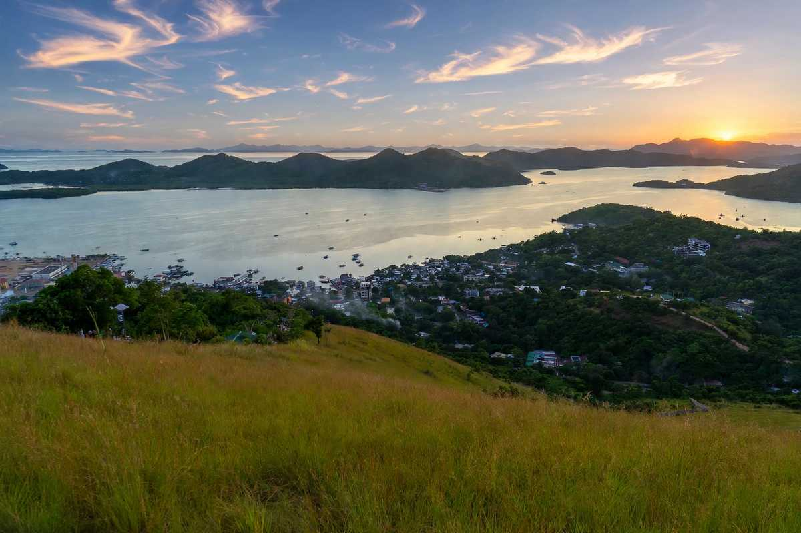

Mount Tapyas is the hill with the big white cross that you see from almost anywhere in Coron Town. Getting to the top means about 721 numbered concrete steps, roughly 210 metres of height gain and somewhere between 20 and 45 minutes of climbing. Entry is free, and at the top you look out over the harbour, the bay and the karst islands of the Calamian group.
Most people fit the climb into a spare hour between boat tours. It is better as the centre of a full day on land: the waterfront and market in the morning, a slow lunch through the hottest hours, the stairs in the late afternoon, sunset from the summit, then a soak at Maquinit Hot Spring after dark.
This guide covers the hill itself, what to expect on the steps, an hour-by-hour plan for the day, what everything costs and how to adjust the plan for families, early risers and photographers. If you are still choosing a base, our guide on where to stay in Coron explains why staying in town keeps all of this within walking or tricycle distance.

Mount Tapyas at a Glance
Short, steep, paved
- Concrete stairs with handrails and benches
- Rest decks at intervals on the way up
- Cross, CORON sign and a view deck on top
Sunset or sunrise
- Start up about an hour before sunset
- Or set off around 5:00 AM for sunrise
- Bring a light for the walk down
Coron Town Is Not Coron Island
Plenty of first-timers mix these up, and it changes how you plan. "Coron" can mean three different things, and Mount Tapyas belongs to only one of them.
Where the hill is
Coron Town
The main settlement, on the southeastern coast of Busuanga Island. It has the port, the market, the church, hotels and restaurants, plus Mount Tapyas right behind it.
A boat ride away
Coron Island
The steep limestone island across the water, home to Kayangan Lake, Twin Lagoon and Barracuda Lake. It is ancestral land of the Tagbanwa people.
On paper
The municipality
Covers both, along with the smaller islands and waters around them. Tour brochures use "Coron" for all three.
Coron Town is a working port. Tricycles buzz along the main road, bangkas load and unload at the harbour, and the market runs from early morning. It is not a polished resort strip, and a day on foot there shows you a side of Coron that the boat tours skip.
What the Climb Up Mount Tapyas Is Like
The stairs start at the edge of town and go straight up the slope, with handrails the whole way and shaded benches at the rest decks. Every step carries a painted number, and markers such as 100, 300, 500 and 700 tell you how far you have come. That counting makes the climb feel shorter than it is.
Fit walkers can reach the top in under 20 minutes. With photo stops and a few breathers, 30 to 45 minutes is normal. The steepness is the hard part, not the distance, so set a pace you can hold rather than rushing the first hundred steps and stalling halfway. The bay opens up below you around the middle of the climb, and a side path near the top leads to the big CORON letters.
Do not stop at the first railing you reach on the summit. Past the cross, grassy slopes roll away toward the ridges of Busuanga, and they are quieter and give wider angles over the town and the bay.
What you can see from the top
On one side, the rooftops of the town's Poblacion and the harbour full of moored boats. On the other, Coron Bay, the dark shape of Coron Island and a scatter of small islands across the water. The pale limestone ridges you see were once ancient coral, worn by rain and sea into the cliffs and lagoons that the boat tours visit. From up here you can see how the whole area fits together.
The cross and the story behind the name
Tapyas is usually translated as chipped or sliced, a nod to the hill's flattened top. Locals often tie that shape to bombing during the Second World War, but treat it as a story people tell, not settled history. What is well recorded happened offshore: on 24 September 1944, United States Navy aircraft attacked Japanese supply ships sheltering in Coron Bay, and the sunken fleet now draws divers from around the world. Our guide to Coron wreck diving and Kayangan Lake covers those sites.
The cross on the summit is a rebuild. Super Typhoon Yolanda (Haiyan) destroyed the first one, and residents put it back up. It is lit at night along with the CORON sign, so the hill doubles as the town's landmark after dark.
A Day in Coron Town, Hour by Hour
This plan suits anyone who has already booked an island-hopping day or two and wants one day with no boats. Times are a guide; move them around for the heat, your fitness and the sunset time on your date.
One day · Coron TownHarbour, market, hill and hot spring
- Early morningLualhati Park and the waterfrontWatch the tour boats and fishers head out, with Mount Tapyas in view behind town
- Mid-morningCoron Public MarketFresh seafood on ice, fruit, dried fish and Palawan cashews
- Late morningSan Agustin Parish Church, Roxas StreetAn active parish since 1901; go in quietly if a service is on
- MiddayLunch in town, then restSit out the hottest hours; refill water and charge your phone
- About 4:30 PMStart the Mount Tapyas climbAbout an hour before sunset leaves time to find a good spot
- SunsetGolden hour, then blue hourStay until the town lights and the cross come on
- EveningMaquinit Hot SpringAbout 20 to 30 minutes away by tricycle
- Late eveningDinner back in townGrilled seafood or chicken inasal on the main streets
Morning: the waterfront, the market and the church
Lualhati Park is the boardwalk where many island tours leave from, and early morning is its busiest hour. Crews load coolers and life jackets, fishers come in, and the light on the bay is still soft. It also gives you a look at the hill you will be climbing later.
A short walk inland, the public market is where the town buys its food. Look for fish and squid on ice, mangoes and bananas, bags of dried seafood and the roasted cashews (kasoy) that most visitors take home. Some vendors will cook what you buy at a nearby stall; agree on the cooking charge before handing anything over.
San Agustin Parish Church on Roxas Street is a working parish, not a museum. Its feast day on 28 August is also when the town holds the Kasadyaan Festival, with Masses, a procession and street dancing. On an ordinary day, dress modestly, keep your voice down and skip photos of people at prayer.
Midday: eat local and slow down
Coron's midday sun is fierce, so this is the time to sit still. Eat at a carinderia or a small restaurant in town, then head back to your room or a café for an hour or two. Use the break to pick up cashews and souvenirs too, because many small shops close not long after dark.
Late afternoon: up the stairs
Aim to start climbing about an hour before sunset, around 4:30 PM in most months. You can walk to the trailhead from much of town; by tricycle, one landmark drivers know is the area near K-Heights Inn and a basketball court, across from the first steps. A ride there is around ₱150, but agree on the fare before you get in.
Expect company at the top. Tapyas is the town's favourite sunset spot, and the railings fill up during golden hour, especially from December to April. Going a little further along the grassy slopes usually finds you more space.
Sunset: stay for all of it
The show comes in stages. The light warms over the rooftops, the sun drops behind the western islands and the bay turns gold and pink, and then blue hour settles in as the town lights switch on below you. The lit cross and sign appear last. If you feel steady on the stairs, wait for that final part before heading down.
Evening: Maquinit Hot Spring
Maquinit sits about 7 kilometres out of town, a 20 to 30 minute tricycle ride on a rough road. It is a saltwater hot spring, with stone pools at roughly 38 to 40°C, and the warm water feels far better in the cooler evening air than at midday. Entry runs around ₱200 to ₱300 for adults, cash only, with lower rates often given to children and students. Rates change, so check at the gate.
Soak for half an hour, cross the bamboo bridge and leave time to change. The trip back is in the dark, so make sure your tricycle or scooter has working headlights. A return tricycle with waiting time is usually around ₱300 to ₱400, though some drivers quote more; settle the price and the waiting time before you leave town.
If you would rather not arrange rides yourself, shared town tours bundle Mount Tapyas, a few town stops and Maquinit. Prices range from about ₱800 for a basic shared tour to roughly US$16 to US$21 when booked online, with private tours costing more.
What a Coron Town Day Costs
A day on land costs far less than a boat day, since the main sight is free. Here is what to plan for per person, in cash.
For comparison, a shared island-hopping tour usually costs ₱1,200 to ₱1,900 per person with lunch and entrance fees, and kayaks and snorkel gear cost extra. Our rundown of Coron island hopping tours explains what each route includes. A day with one tour, meals and local rides comes to around ₱3,000 to ₱4,000, while a town-only day can cost well under half of that.
Best Time for the Climb
December to April
Clearest skies
The dry months give the most reliable sunsets and the calmest seas for boat days. February and March tend to be the driest. December is also the busiest, so the summit gets crowded.
May
Hot, still workable
The changeover month is usually fine for the climb, but it is warm on the stairs. Start later in the afternoon and carry extra water. Check the forecast before boat days.
June to October
Wet season, watch the clouds
Rain, wind and typhoons cancel boat tours more often, and July to October is the peak. A town day holds up better than a boat day, but the steps get slippery and clouds can hide the sunset. Keep a spare day.
Getting to Coron and Getting Around Town
- Fly into BusuangaFrancisco B. Reyes Airport (USU) is the gateway, with direct flights from Cebu. Since 29 March 2026, Manila-area turboprop flights to Coron leave from Clark, two to three hours north of central Manila by road, so check your departure airport when you book.
- Van into townAirport vans reach Coron Town in 30 to 60 minutes, depending on traffic and drop-offs.
- Ferry by seaFerries link El Nido and Coron in about three and a half to five hours. Overnight boats from Manila run less often and suit travellers happy to take it slow.
- On footThe town centre, the waterfront, the market, the church and the Tapyas stairs are all within walking distance of each other.
- TricycleThe standard short ride and the easiest way out to Maquinit. Settle the fare first, as there are no meters.
- Scooter rentalAround ₱500 a day for confident riders. Ask about insurance, and check the lights before riding back from the hot spring at night.
Before You Climb
Stair-day checklist
- Wear shoes with gripClosed shoes or sturdy sandals handle the concrete better than slippers, especially when the steps are wet.
- Carry waterAt least one bottle each.
- Bring a light for the way downParts of the stairway are lit at night, but a headlamp or phone torch makes the descent safer.
- Pack a rain layer in the wet seasonShowers can roll in fast, and wet steps call for a slower pace.
- Know your limitsWith heart, breathing or knee problems, take it slowly and rest often, or enjoy the bay from Lualhati Park instead.
- Keep the boats off this afternoonSqueezing a tour and the climb into one afternoon rushes both. Give the hill its own time.
Visiting Coron with Respect
Coron Island, the dark mass you see from the summit, is the ancestral domain of the Tagbanwa (also written Tagbanua). In 2001 they received a Certificate of Ancestral Domain Title covering 22,284 hectares of land and sea. The island has twelve freshwater lakes, all considered sacred, and only Kayangan and Barracuda are open to outsiders, during the day and under Tagbanwa guidance. Of the municipality's 34 natural attractions, 15 sit on Coron Island and are managed by the community.
So the fees, the life-jacket rules, the drone bans and the closed areas you meet on boat days are how the owners of a sacred place choose to share it. Kayangan Lake, for example, is commonly charged at ₱300, requires life jackets for swimmers and bans drones where birds nest.
Small habits that help on land and on the water.
Pay the official rate
Fees fund community patrols, conservation and local jobs.
Hands off the reef
Use reef-safe sunscreen, and do not touch coral, marine life or underwater ledges, or take stones and plants.
Carry it back
Bring a refillable bottle and take every wrapper down the hill and off the boat with you.
Keep it local
Eat at carinderias and market stalls, buy cashews from local sellers, and book accredited guides and operators.
The pressure is real. Coron logged 341,546 visitors in 2024, most of them Filipino, and that growth strains water, waste, reefs and housing in a small town. Choosing local businesses and following site rules is the most useful thing a short visit can do.
Ways to Change the Day
- Early risersSunrise climb
Leave around 5:00 AM with a torch to reach the top before the sun. The air is cooler, and the summit is usually far emptier than at sunset.
- PhotographersTwo trips up
Shoot the harbour at first light, rest through midday, then go back up just for blue hour and the lit cross.
- FamiliesShorter and slower
Cut the market walk short, give the stairs extra time, and use the shallower pools and changing rooms at Maquinit.
- History fansAdd the wrecks
Snorkellers and beginner divers can visit the Lusong Gunboat and Skeleton Wreck. Deeper wrecks such as the Irako need Advanced Open Water and wreck training.
On a longer trip, three or four nights works well: two island-hopping days, one town day built around Tapyas, and a spare day in case the weather cancels a boat.
Quick Answers
How many steps are there on Mount Tapyas?
About 721, all numbered. Some people round it to 700 or 720, and one of the last markers reads 720.
Is there an entrance fee?
No. The climb is free, and the stairs are open all day. Daylight is safest for the climb, and a torch helps after dark.
Is Mount Tapyas hard to climb?
It is easy to moderate. The stairs are steep but short, with handrails and benches, so most reasonably mobile people manage it by pacing themselves.
Can I climb at night?
Yes, and many people come down after dark following sunset. Bring your own light, since the lighting on the stairs does not cover every section.
Can I do Tapyas and Maquinit on the same evening?
Yes, that is the classic pairing. Climb for sunset, come down, and take a tricycle straight to the hot spring, which is about 20 to 30 minutes away.
Why Give It a Whole Day
Mount Tapyas is not the highest or toughest climb in Palawan, and it does not need to be. From the summit you can see the town, the harbour, the karst islands and the open sea all at once, and the morning you spent walking through the market and past the church makes that view mean more. Save the lagoons for another day, give Coron Town one unhurried day on foot, and finish it in warm salt water at Maquinit.


Comments
No comments yet. Been here recently? Share a tip or ask a question.
Leave a Reply